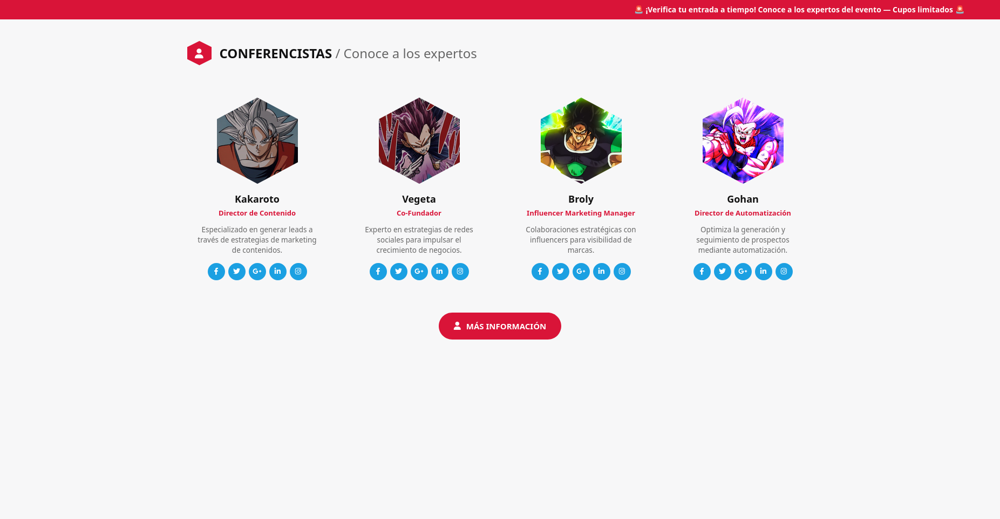

Sección de Conferencistas

Sección web que presenta a los conferencistas de un evento, hecha con HTML y una hoja de estilos CSS externa. Practiqué el uso de imágenes, la organización del contenido y la separación entre estructura y estilos.